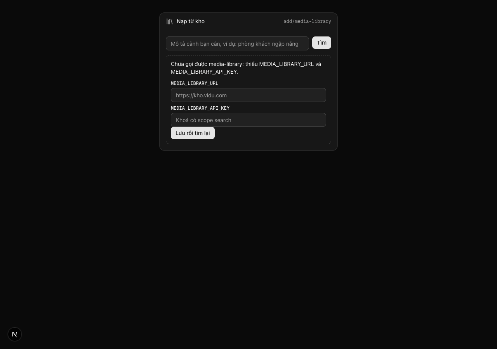
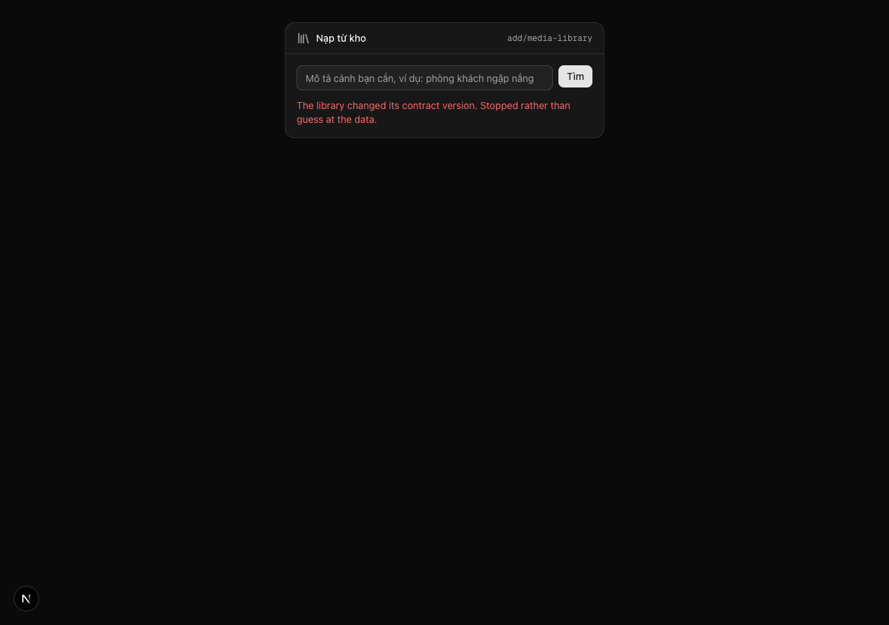
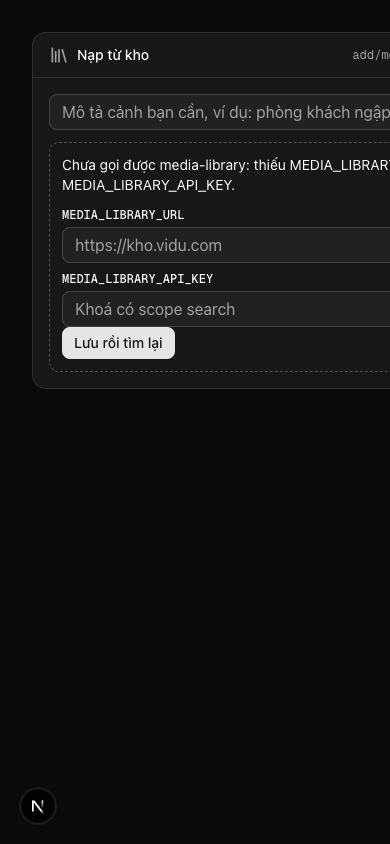

| Eval | Tiêu chí | Loại | Verdict | run_id | verified_at |
|---|---|---|---|---|---|
| E1 | AC-1 | test | PASS | minted-add-media-library-E1-r4 | 2026-08-20T07:28:08Z |
| E2 | AC-1 | ui-check | PASS | E2 | 2026-08-20T07:28:08Z |
| E3 | AC-2 | script | PASS | minted-add-media-library-E3-r6 | 2026-08-20T14:31:24Z |
| E4 | AC-2 | ui-check | PASS | e4-verify-2026-08-20-lane13b | 2026-08-20T07:28:08Z |
| E5 | AC-3 | test | PASS | minted-add-media-library-E5-r6 | 2026-08-20T14:31:18Z |
| E6 | AC-3 | ui-check | PASS | minted-add-media-library-E6-r4 | 2026-08-20T07:28:08Z |
| E7 | AC-4 | test | PASS | minted-add-media-library-E7-r4 | 2026-08-20T07:28:08Z |
| E8 | AC-5 | test | PASS | minted-add-media-library-E8-r6 | 2026-08-20T14:31:18Z |
| E9 | AC-5 | ui-check | PASS | minted-add-media-library-E9-r4 | 2026-08-20T07:28:08Z |
| E10 | AC-6 | test | PASS | minted-add-media-library-E10-r6 | 2026-08-20T14:31:18Z |
| E11 | AC-6 | ui-check | PASS | minted-add-media-library-E11-r4 | 2026-08-20T07:28:08Z |
| E12 | AC-7 | script | PASS | minted-add-media-library-E12-r6 | 2026-08-20T14:31:24Z |
| E13 | AC-7 | test | PASS | minted-add-media-library-E13-r4 | 2026-08-20T07:28:08Z |
| E14 | AC-8 | test | PASS | minted-add-media-library-E14-r4 | 2026-08-20T07:28:08Z |
| E15 | AC-9 | test | PASS | minted-add-media-library-E15-r6 | 2026-08-20T14:31:18Z |
| E16 | AC-9 | ui-check | PASS | E16-round3 | 2026-08-20T07:28:08Z |
| E17 | AC-10 | test | PASS | minted-add-media-library-E17-r6 | 2026-08-20T14:31:18Z |
| E18 | AC-11 | test | PASS | minted-add-media-library-E18-r4 | 2026-08-20T07:28:08Z |
| E19 | AC-12 | test | PASS | minted-add-media-library-E19-r4 | 2026-08-20T07:28:08Z |
| E20 | AC-12 | ui-check | PASS | E20-verify-20260820-1125 | 2026-08-20T07:28:08Z |
| E21 | AC-13 | test | PASS | minted-add-media-library-E21-r6 | 2026-08-20T14:31:18Z |
| E22 | AC-13 | ui-check | PASS | 03FD6CB3B7C9788B75D16BB3AA9AF3F0 | 2026-08-20T07:28:08Z |
| E23 | AC-14 | script | PASS | minted-add-media-library-E23-r6 | 2026-08-20T14:31:24Z |
| E24 | AC-15 | script | PASS | minted-add-media-library-E24-r4 | 2026-08-20T07:28:08Z |
| E25 | AC-15 | judgment | UNCERTAIN | — | — |
| E26 | AC-10 | test | PASS | minted-add-media-library-E26-r6 | 2026-08-20T14:31:24Z |
| E27 | AC-10 | script | PASS | minted-add-media-library-E27-r6 | 2026-08-20T14:31:24Z |
| E28 | AC-3 | script | PASS | minted-add-media-library-E28-r6 | 2026-08-20T14:31:24Z |
| E29 | AC-1 | ui-check | PASS | minted-add-media-library-E29-r4 | 2026-08-20T07:28:08Z |
AC-1: (cross-layer)** Given kho khoá BYO thiếu `MEDIA_LIBRARY_URL` hoặc
AC-1: (cross-layer)** Given kho khoá BYO thiếu `MEDIA_LIBRARY_URL` hoặc

AC-2: Given OneFlow chạy trên máy **chưa từng** cấu hình media-library, When người
media-library imported only by its 9 declared files — 394 files parsed under src
AC-2: Given OneFlow chạy trên máy **chưa từng** cấu hình media-library, When người
AC-3: (cross-layer)** Given cấu hình đủ và kho có video khớp, When người dùng gõ
Tests 27 passed (27) Start at 14:31:18 Duration 554ms (transform 132ms, setup 0ms, import 217ms, tests 184ms, environment 0ms)
AC-3: (cross-layer)** Given cấu hình đủ và kho có video khớp, When người dùng gõ
AC-4: Given kho trả `cards: []` nhưng `candidates > 0` (kệ mỏng — đã qua lọc cứng
AC-5: (cross-layer)** Given response mang `warnings` chứa `embedding_unavailable`,
Tests 27 passed (27) Start at 14:31:18 Duration 554ms (transform 132ms, setup 0ms, import 217ms, tests 184ms, environment 0ms)
AC-5: (cross-layer)** Given response mang `warnings` chứa `embedding_unavailable`,
AC-6: (cross-layer)** Given **tám** cách hỏng có thật của ranh giới này — 401 khoá
Tests 27 passed (27) Start at 14:31:18 Duration 554ms (transform 132ms, setup 0ms, import 217ms, tests 184ms, environment 0ms)
AC-6: (cross-layer)** Given **tám** cách hỏng có thật của ranh giới này — 401 khoá
AC-7: Given các thẻ mang từ vựng lĩnh vực của library (`provenance` — kể cả dạng
no domain vocabulary in 30 changed files (8 fields checked, 18 literals checked)
AC-7: Given các thẻ mang từ vựng lĩnh vực của library (`provenance` — kể cả dạng
AC-8: Given một thẻ có `license_label`, When thẻ hiện trên node, Then nhãn đó
AC-9: (cross-layer)** Given người dùng chọn một thẻ, When lệnh nạp chạy xong,
Tests 16 passed (16) Start at 14:31:18 Duration 848ms (transform 481ms, setup 0ms, import 613ms, tests 473ms, environment 0ms)
AC-9: (cross-layer)** Given người dùng chọn một thẻ, When lệnh nạp chạy xong,
AC-10: Given `urls.original` trỏ tới một scheme không phải
Tests 16 passed (16) Start at 14:31:18 Duration 848ms (transform 481ms, setup 0ms, import 613ms, tests 473ms, environment 0ms)
AC-11: Given hợp đồng của library **không trả** `mime`, `size_bytes` hay
AC-12: (cross-layer)** Given một asset vừa nạp xong, When node hoàn tất, Then nó
AC-12: (cross-layer)** Given một asset vừa nạp xong, When node hoàn tất, Then nó
AC-13: (cross-layer)** Given dịch vụ trả `contracts_version` ngoài dòng adapter
Tests 27 passed (27) Start at 14:31:18 Duration 554ms (transform 132ms, setup 0ms, import 217ms, tests 184ms, environment 0ms)
AC-13: (cross-layer)** Given dịch vụ trả `contracts_version` ngoài dòng adapter

AC-14: Given lời hứa của roadmap "add node không ABI-driven nên không đụng
comparing HEAD against origin/main (merge-base 5547aff2f241) checked 105 changed file(s) against 9 t3 path rule(s), 2 allowed, 1 required OK: only declared t3 paths touched — the declared surface holds
AC-15: Given **tám** trạng thái của node — thiếu cấu hình · rỗng chờ gõ · đang tìm
AC-15: Given **tám** trạng thái của node — thiếu cấu hình · rỗng chờ gõ · đang tìm
Phán đoán: khong khai input — may khong co can cu, nguoi quyet o Cong 2. Machine-proposed verdict was PASS, but zero votes back it.
AC-10: Given `urls.original` trỏ tới một scheme không phải
Tests 8 passed (8) Start at 14:31:24 Duration 163ms (transform 43ms, setup 0ms, import 28ms, tests 61ms, environment 0ms)
AC-10: Given `urls.original` trỏ tới một scheme không phải
downloadAndSave() callers: (none) — 394 files parsed under src
AC-3: (cross-layer)** Given cấu hình đủ và kho có video khớp, When người dùng gõ
Tests 3 passed (3) Start at 14:31:24 Duration 98ms (transform 15ms, setup 0ms, import 21ms, tests 2ms, environment 0ms)
AC-1: (cross-layer)** Given kho khoá BYO thiếu `MEDIA_LIBRARY_URL` hoặc
